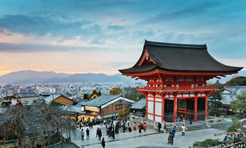
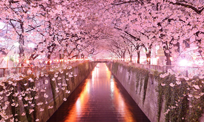
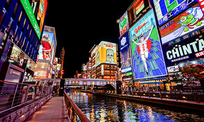

Japan (Japanese: 日本 Nippon or Nihon) is an island nation in East Asia. Located in the Pacific Ocean, it lies to the east of the Sea of Japan, the East China Sea, China, Korea and Russia, stretching from the Sea of Okhotsk in the north to the East China Sea and Taiwan in the southwest. It is often called the "Land of the Rising Sun".

why travel here?
Japan attracted 19.73 million international tourists in 2015. Japan has 19 World Heritage Sites, including Himeji Castle, Historic Monuments of Ancient Kyoto and Nara. Popular tourist attractions include Tokyo and Hiroshima, Mount Fuji, ski resorts such as Niseko in Hokkaido, Okinawa, riding the shinkansen and taking advantage of Japan's hotel and hotspring network.
scenary
Japan has nine forest ecoregions with over 90,000 species of wildlife, including the brown bear, Japanese macaque, Japanese raccoon dog, Large Japanese Field Mouse, and Japanese giant salamander. A large network of national parks has been established to protect important areas of flora and fauna as well as 37 Ramsar wetland sites. Four sites have been inscribed on the UNESCO World Heritage List for their outstanding natural value.


nightlife
Tokyo and Osaka are major Japanese cities that have a vibrant nightlife. In Tokyo, one such area is the Roppongi district, which features numerous bars, nightclubs, strip clubs, restaurants, hostess clubs, cabarets, and other forms of entertainment. In Osaka there is the famous Dotonbori area, which is well known for it's Glico "Running Man" sign.
culture
Japanese contemporary culture combines influences from Asia, Europe and North America. Traditional Japanese arts include crafts such as ceramics, textiles, lacquerware, swords and dolls; performances of bunraku, kabuki, noh, dance, and rakugo; and other practices, the tea ceremony, ikebana, martial arts, calligraphy, origami, onsen, Geisha and games.